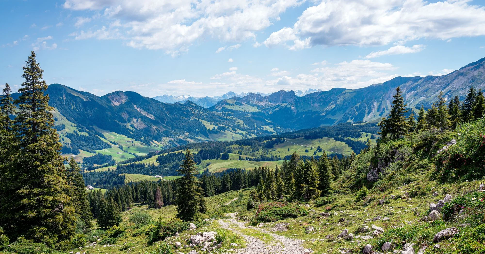
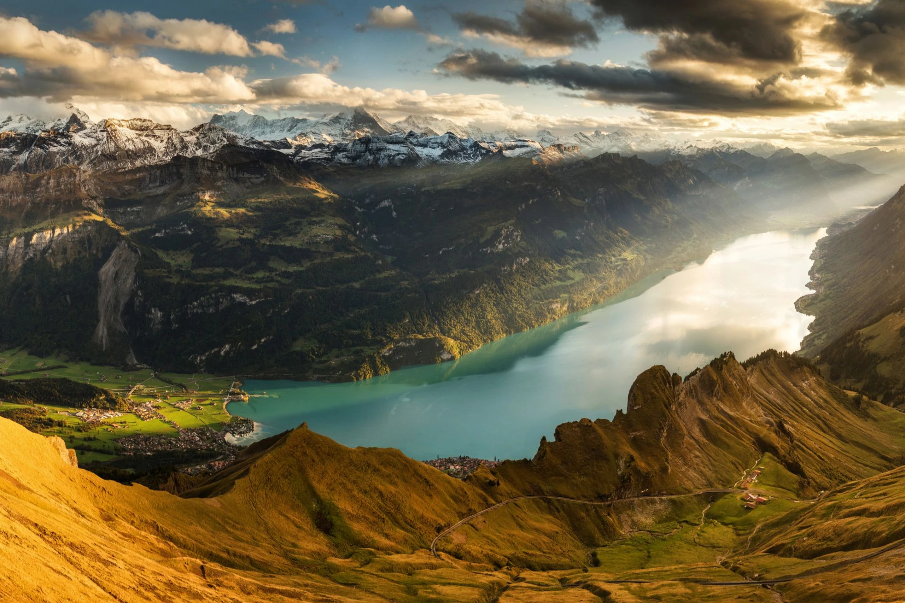
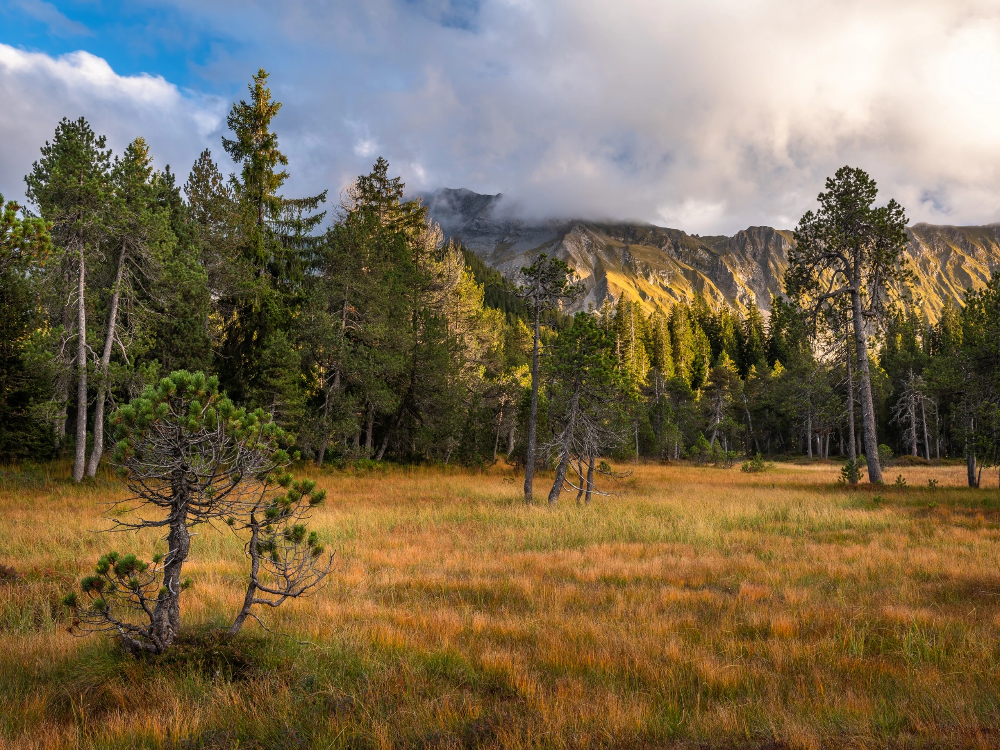
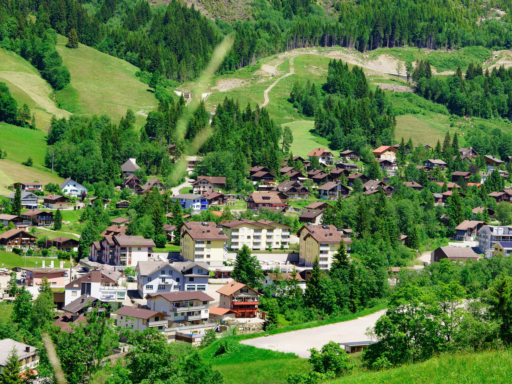
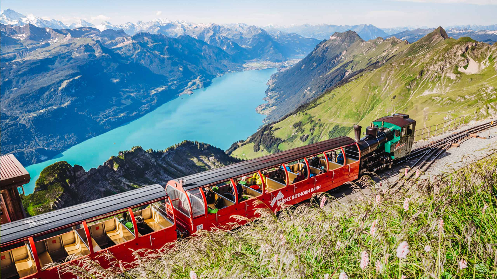
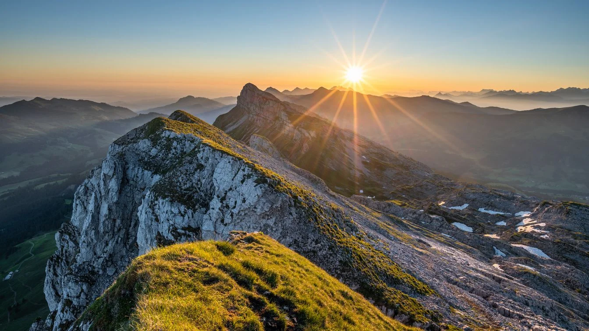
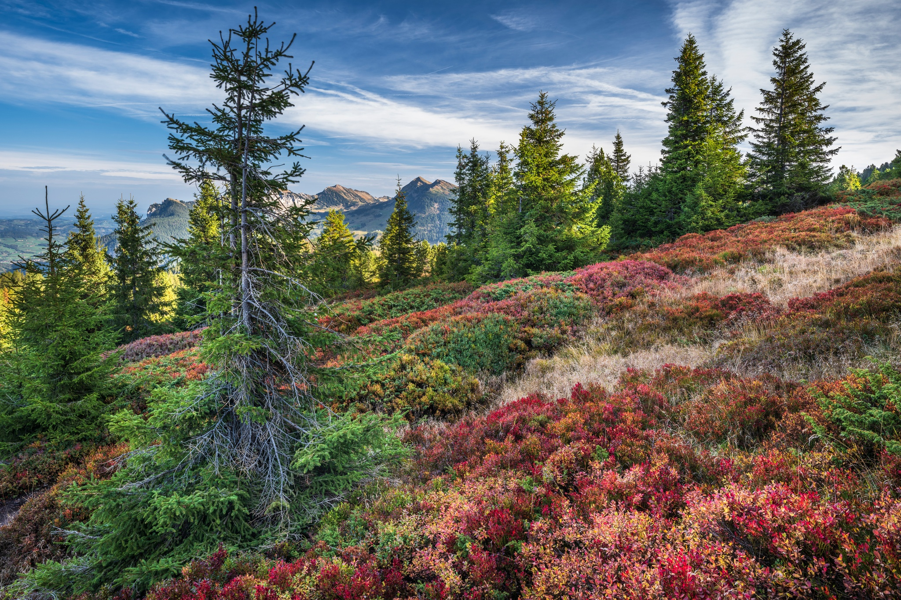
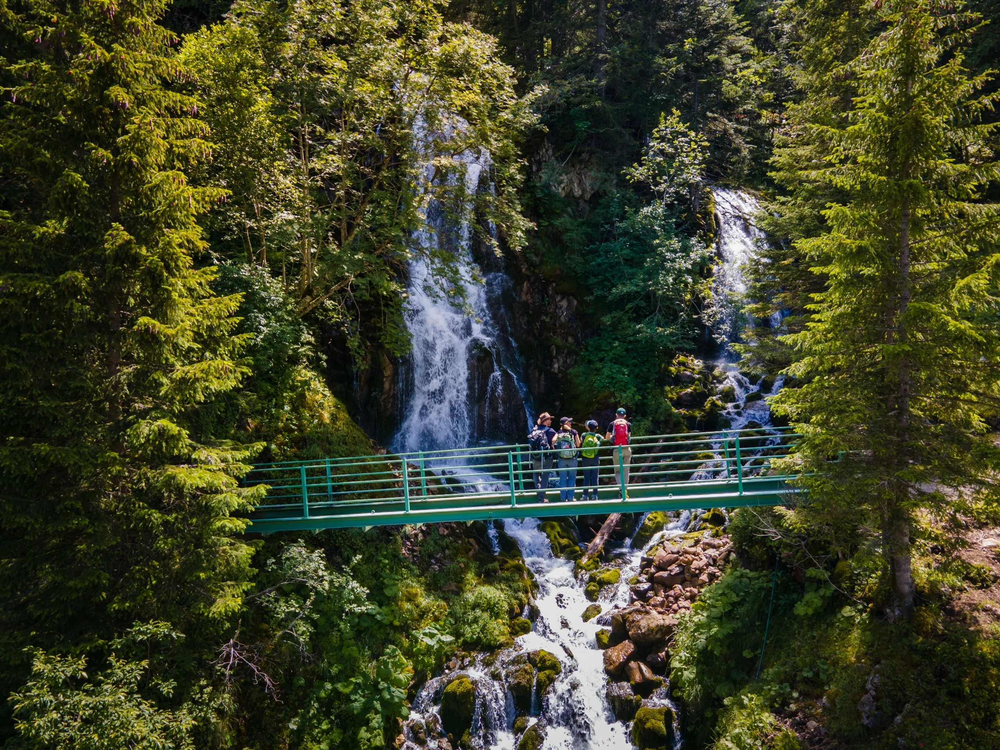
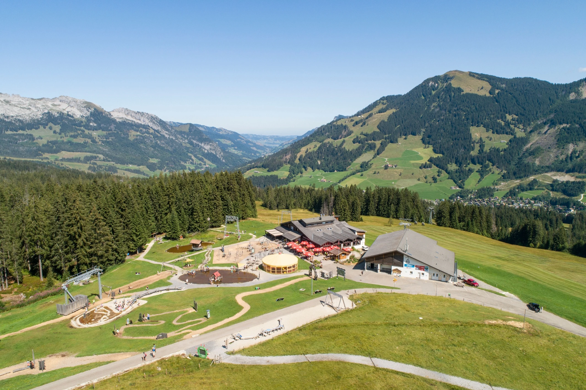

Umgebung
UNESCO Biosphäre Entlebuch
Alles in Reichweite
50 m
Posthaltestelle Höchistrasse
500 m
Dorfzentrum, Restaurants & Lebensmittel
550 m
Gondelbahn auf Rossweid (Moorakulum)
2'500 m
Talstation Luftseilbahn Brienzer Rothorn
3'000 m
Quelle der Waldemme
UNESCO Biosphäre Entlebuch
Eine der artenreichsten
Regionen der Schweiz
Das Entlebuch ist seit 2001 als UNESCO Biosphäre anerkannt – eine der ersten Biosphären weltweit, die durch eine Volksabstimmung entstanden ist. Riesige Moorlandschaften, tiefe Wälder und majestätische Alpenketten prägen diese einzigartige Landschaft. Sörenberg liegt auf 1'160 m ü. M. mittendrin.
1'160
m ü. M.
Höhe Sörenberg
2'348
m ü. M.
Brienzer Rothorn
2001
UNESCO
Biosphäre

2'348 m ü. M.
Brienzer Rothorn
Der markante Hausberg Sörenberbergs bietet ein spektakuläres Panorama über die Voralpen und das Mittelland. Per Luftseilbahn in wenigen Minuten erreichbar – ein Muss zu jeder Jahreszeit.

Naturjuwel
Moorlandschaften
Das Entlebuch beherbergt einige der grössten intakten Hochmoore der Schweiz. Seltene Tier- und Pflanzenarten, stille Weiler und ein Wanderweg quer durch das Moor – Natur pur, direkt vor der Haustür.

Sörenberg
Dorf & Infrastruktur
Restaurants, Skigebiet, Gondelbahn, Lebensmittelläden – alles in wenigen Gehminuten erreichbar. Sörenberg ist ein kompaktes Bergdorf mit allem Notwendigen, ohne seinen alpinen Charakter zu verlieren.
Seit 1892
Die Dampfzahnradbahn
Eine der letzten Dampfzahnradbahnen der Welt fährt seit über 130 Jahren auf den Brienzer Rothorn. Die Fahrt durch Wälder, Alpweiden und Felsen hinauf auf 2'244 m ist ein einzigartiges Erlebnis – zeitlos, majestätisch und unvergesslich.
Die Talstation Brienz liegt rund 45 Minuten vom Chalet Bambi entfernt. Die Bahn verkehrt saisonal von Mai bis Oktober. Oben erwartet Sie ein Panorama, das die gesamte Zentralschweiz umfasst.

Die Landschaft
Gipfel, Wälder & Wasser

Schratteflue 2'091 m ü. M.
Markantes Kalksteinmassiv mit einzigartiger Karstlandschaft. Beliebtes Ziel für erfahrene Bergwanderer – teils ausgesetzte Grate mit weitem Blick ins Entlebuch.

Haglere 1'948 m ü. M.
Sanfterer Gipfel mit Panoramablick auf Sörenberg und die umliegenden Täler. Gut erreichbar und beliebt bei Familien – von der Gondelbahn auf die Rossweid aus zu Fuss weiterwandern.

Quelle der Waldemme ca. 1'900 m ü. M.
Nur 3 km vom Chalet entfernt entspringt die Waldemme – ein stilles, kraftvolles Erlebnis inmitten unberührter Natur. Ein ideales Ausflugsziel für einen ruhigen Spaziergang.

Rossweid & Moorakulum 1'600 m ü. M.
Die Gondelbahn auf die Rossweid führt direkt ins Moorgebiet – das «Moorakulum» macht Kindern und Erwachsenen die faszinierende Welt der Hochmoore erlebbar.